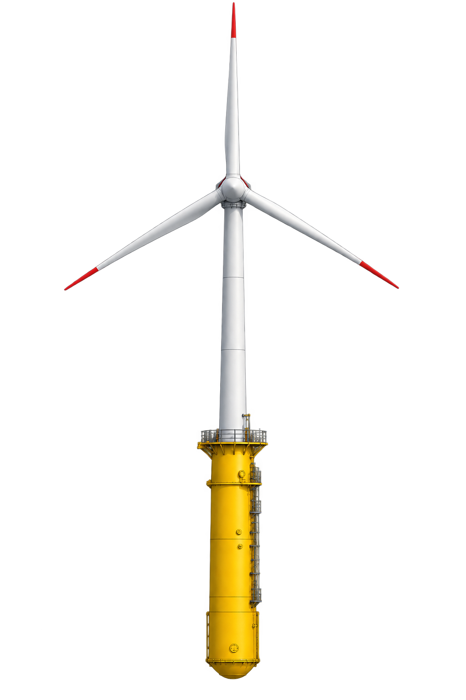
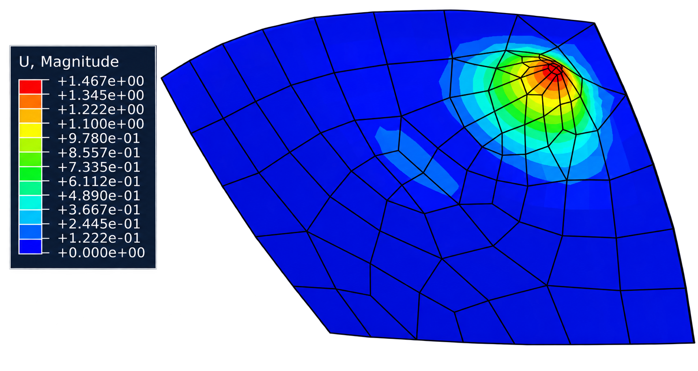
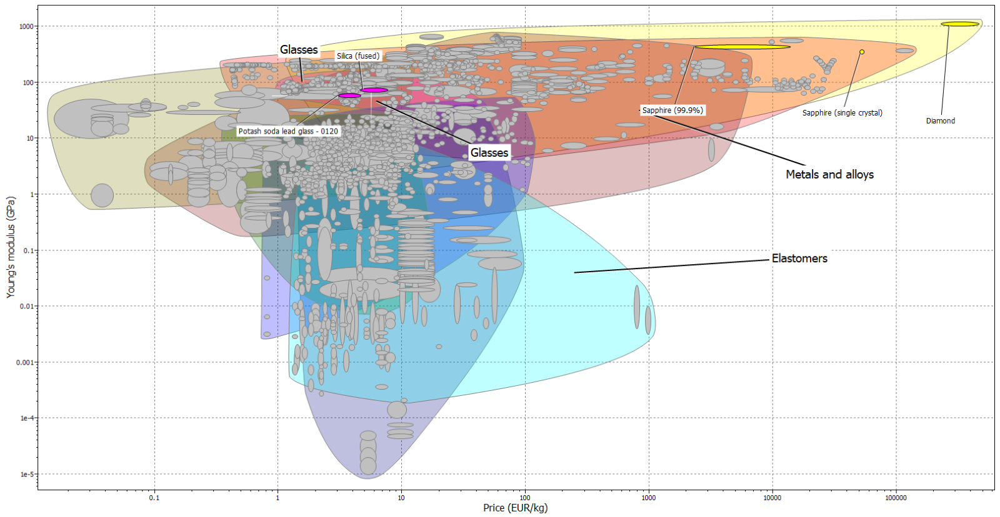
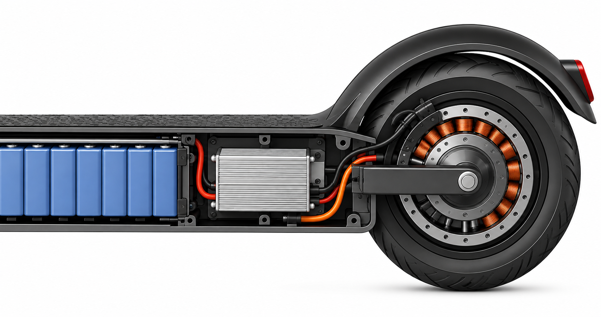
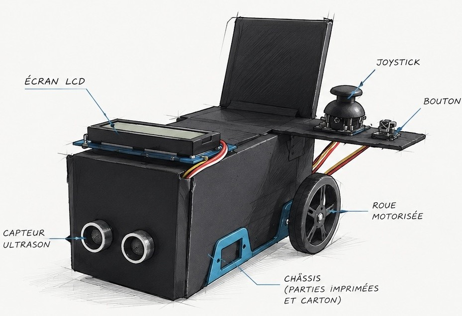

TRAVAUX SÉLECTIONNÉS
Projets.
Une sélection de projets académiques et personnels en conception mécanique, simulation numérique, mécatronique, programmation et innovation. Chaque fiche présente le sujet et les documents disponibles.

Printemps 2025
Modélisation d’une perceuse — TN20
Modélisation détaillée d’un produit mécanique et de ses composants sous CATIA V5.

Printemps 2026
Étude de prédimensionnement d’une éolienne offshore
Étude mécanique d’une éolienne flottante soumise à des actions environnementales.

Printemps 2026
Simulation par éléments finis d’un pare-brise
Modélisation surfacique et volumique, étude statique et analyse vibratoire avec Abaqus.

Automne 2024
Étude bibliographique sur le tramway
Étude de composants d’un tramway et de leurs fonctions dans le système.

Automne 2024
Projet de conception — SY03
Projet de conception présenté à travers une synthèse technique et des supports de présentation.

Automne 2026
Fifth Element — Jardin intérieur connecté
Concept de jardin connecté combinant arrosage, éclairage horticole et électronique embarquée.

Printemps 2024
Projet de mécatronique
Projet de mécatronique présenté dans un support technique.

Printemps 2023
XO Brainer — Jeu développé en Python
Développement d’un jeu de stratégie en Python dans le cadre d’un projet de programmation.